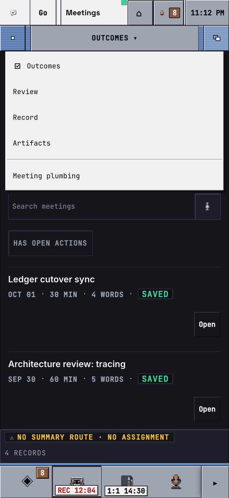
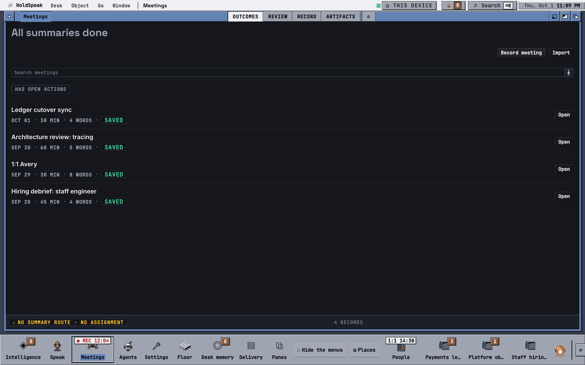
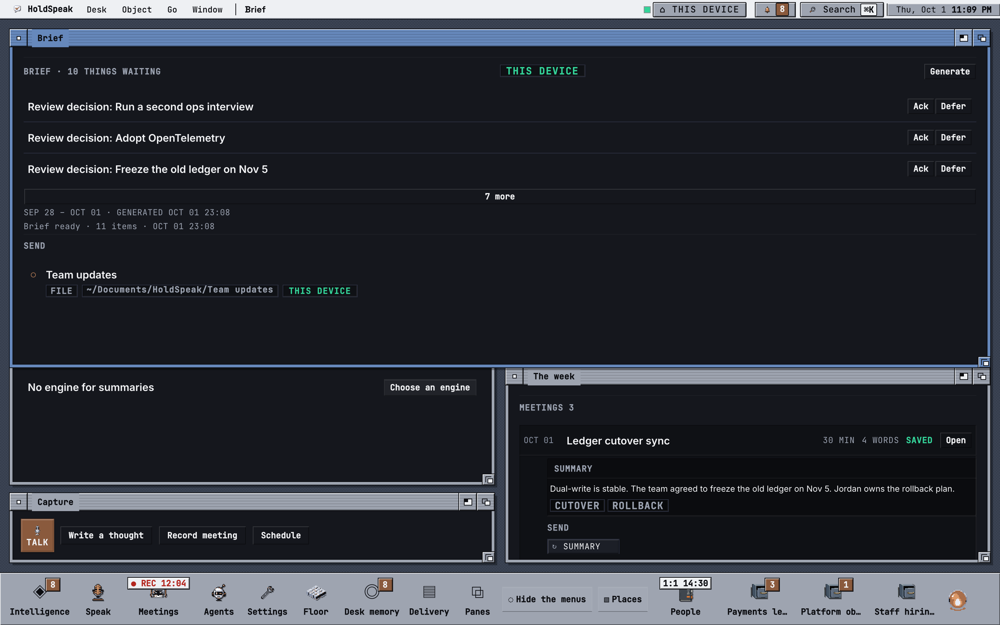
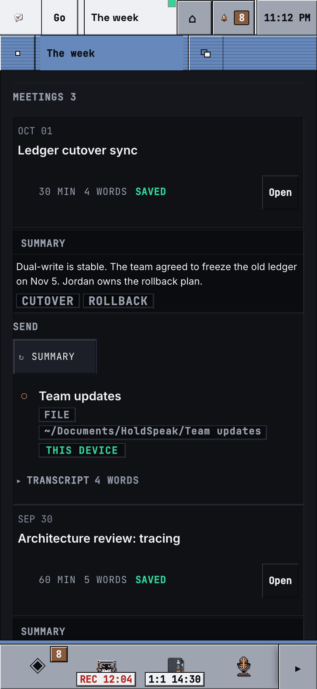
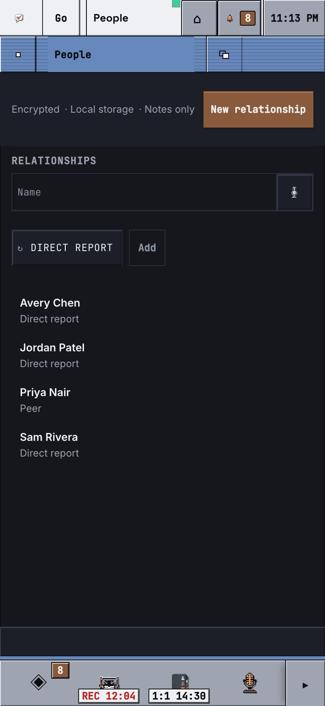

C1-4a · The Chair as windows CRITERIA 4
1440: four windows, The week in front. 393: ONE window (Brief) fills the work area; no stack of bars.
The screen bar names the one front window and the time. The Chair is four windows; Needs you leads with the number and the actions: the ranking strip on its own line and whole (393: RANKED ▾), the availability chip off the strip; SETUP below the actions. The Brief's SEND is on the first screen. ONE needs-you number: head, bell, Intelligence, Desk memory = 8. Every active project has its AppIcon; Staff hiring has no count (never a zero).
Meetings (All summaries done) and the Room (Clear here). Exactly one blue title bar. At 393 a window fills the work area; its head is one 44 px row: close · wings · depth.
Iconify, Zoom, To back, Close window, then Desk ▸ and Go ▸, each verb with its Amiga-key column; the front window's name stays readable.
Depth on the Room: it goes behind; Meetings is the one blue window; the screen bar follows.
393: the Meetings tabs do not fit, so they are ONE menu Button (OUTCOMES ▾, 44 px) in the head row; open: every tab and the gear door, a check on the current one. Nothing clips, nothing scrolls sideways.

Zoom fills the work band; pressed again it returns.

The pens, gadgets, bevels, windows, sizes, verbs, AppIcon states and type, read back from the live :root. At 393 the sheet fills the work area.
1440: four windows, The week in front. 393: ONE window (Brief) fills the work area; no stack of bars.
The Brief zoomed to the whole screen.

393: The week fills the work area.

Close on Brief CLOSES it. 1440: its place holds one compact reopen Button. 393: the next Chair window fills the work area.
The Window menu (393: Go) lists the four Chair windows with a check on each open one; Brief has none.
Picking Brief opens it in front.
The footer verb is Park (no confirm: Restore undoes it). At 393 the warning, the receipt and the verbs no longer overlap.
The meeting leaves the list; PARKED hh:mm + Restore; the PARKED 1 token appears.
The parked rows with the time, the PARKED chip and Restore.
Restore: the receipt reads RESTORED hh:mm and the meeting comes into view, marked.
The hub refuses the Restore: NOT RESTORED · THE HUB DID NOT ACCEPT THE CHANGE + Retry.
Remove parks the item: PARKED hh:mm + Restore; PARKED 1 above the items.
The parked item with Restore.
RESTORED hh:mm; the item is back, marked.
A run claimed the item between the read and the press: NOT PARKED · CLAIMED BY A RUN.
Clear done parks both done items: PARKED 2 · hh:mm + Restore.
One window fills the work area (content 704 px of 852); the first Done is whole on the first screen; the screen bar's controls and the shelf's icons are 44 px or more; Speak is capture on demand.
People fills the work area; its facts read on the dark well (the steel strip at 1.02:1 is gone).

Meetings READY 1; Intelligence SENT 14:02.
Meetings SEND FAILED; Intelligence UNKNOWN.
OFFLINE · AS OF 20:24 heads the shelf; no tag and no count claims to be fresh.
Top: Workbench Steel. Bottom: Honest 2.0 (grey bodies, a complete palette: every text ≥ 4.5:1). The Chair, two windows, People.